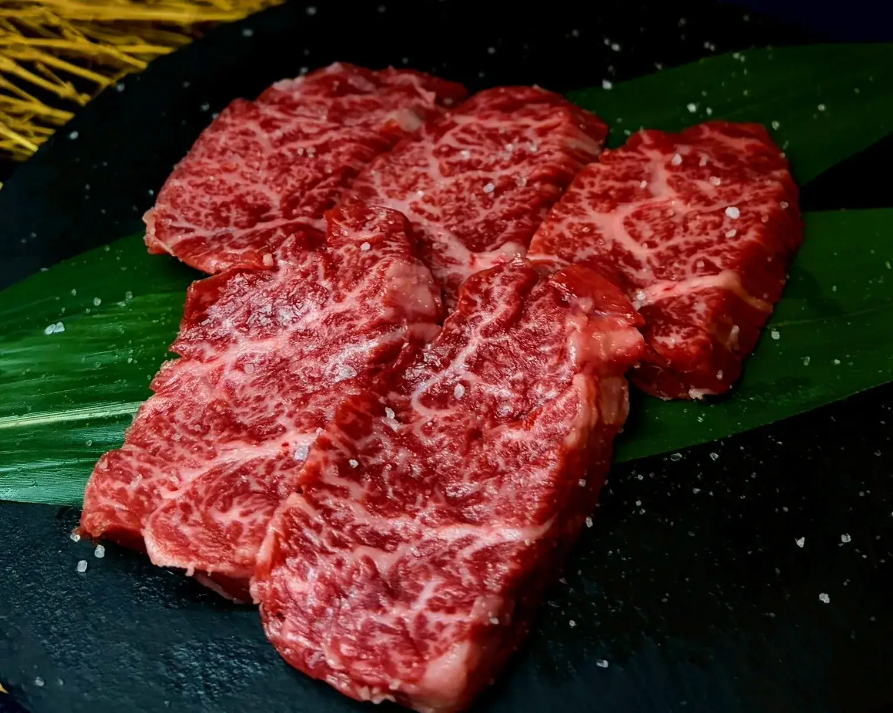
三重縣桑名市長島・名古屋近郊
附證明書的A5松阪牛，以及直接向飛驒高山進貨、隔天就新鮮送達的飛驒牛，在店內親手切製，於桌邊燒烤。
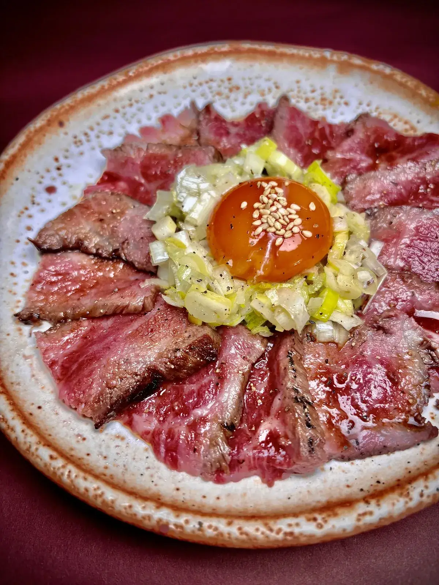
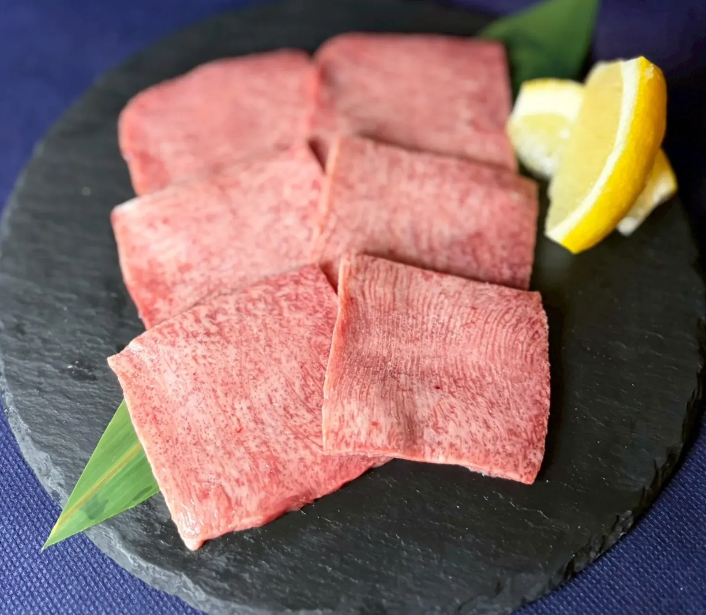
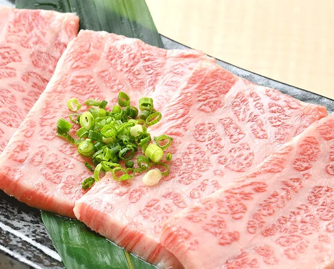
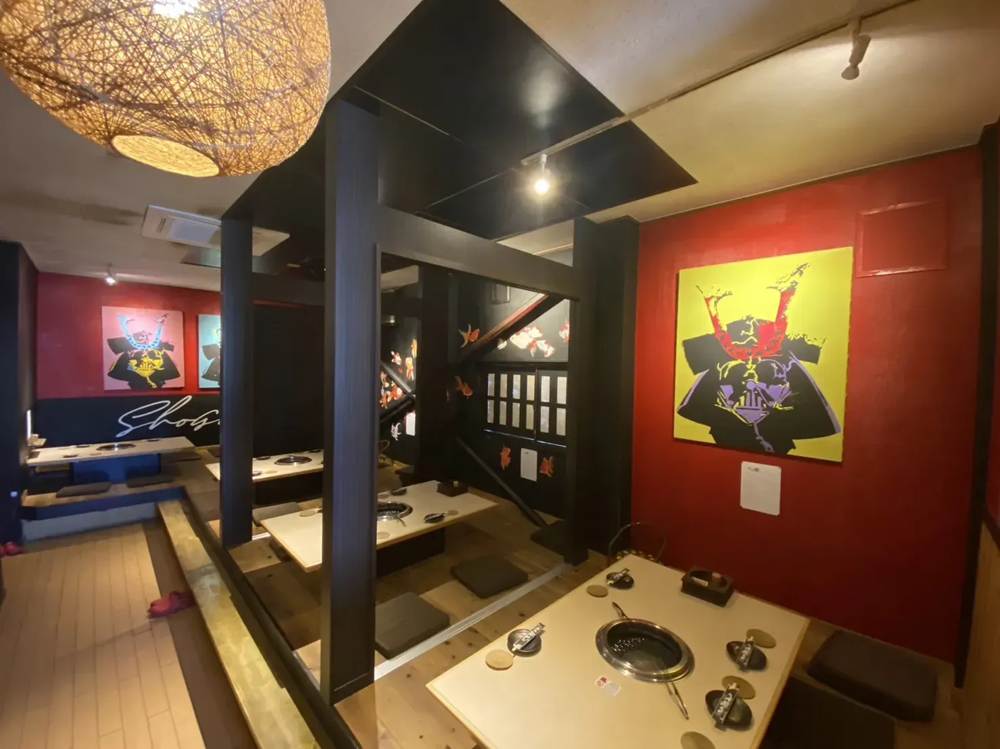
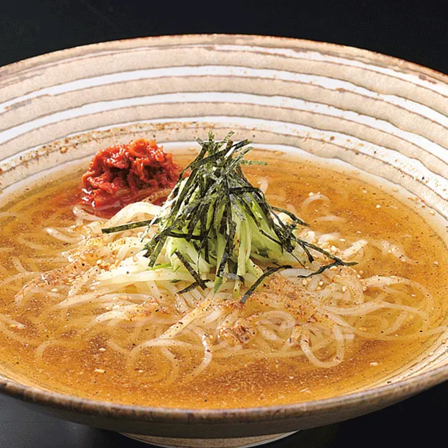
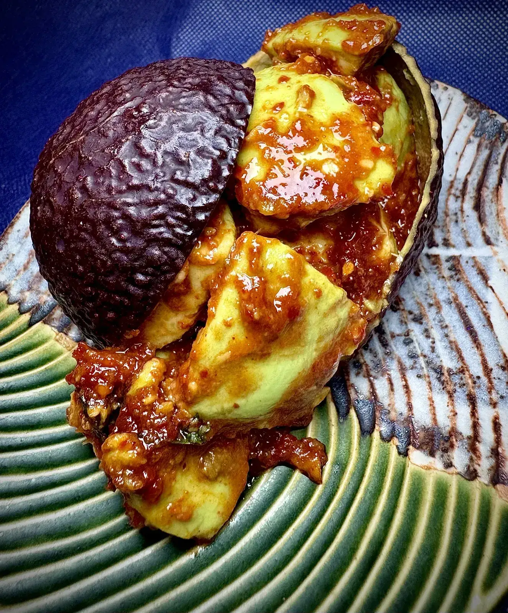
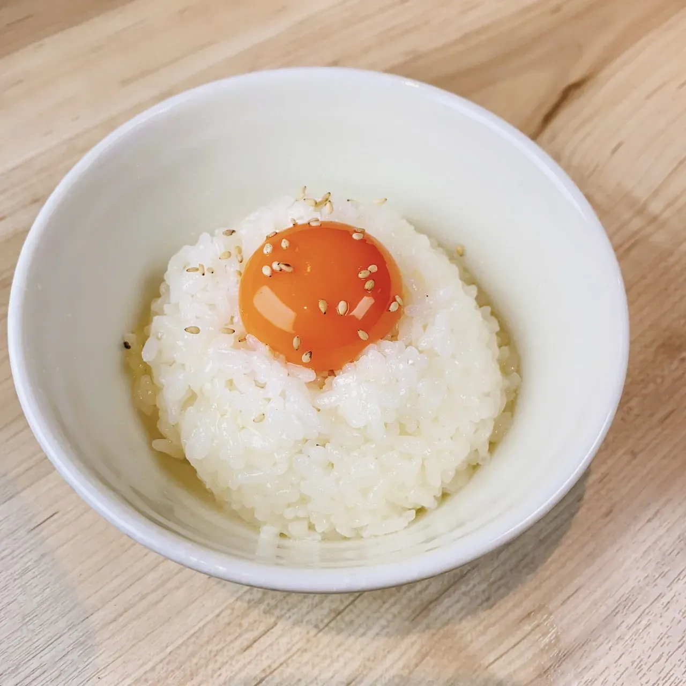
價格均為含稅價。
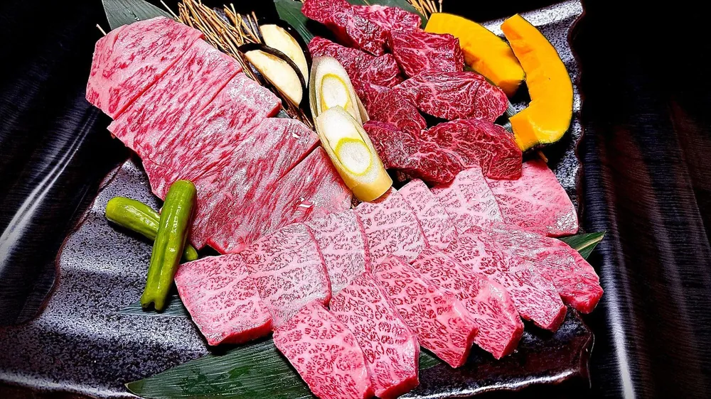
410g・2～3人份。松阪牛西冷、飛驒牛橫膈膜肋側、飛驒牛隔膜背面、和牛大腿內側肉、和牛上等五花肉。
讓本店成名的部位。風味濃郁而清爽，建議沾鹽享用。
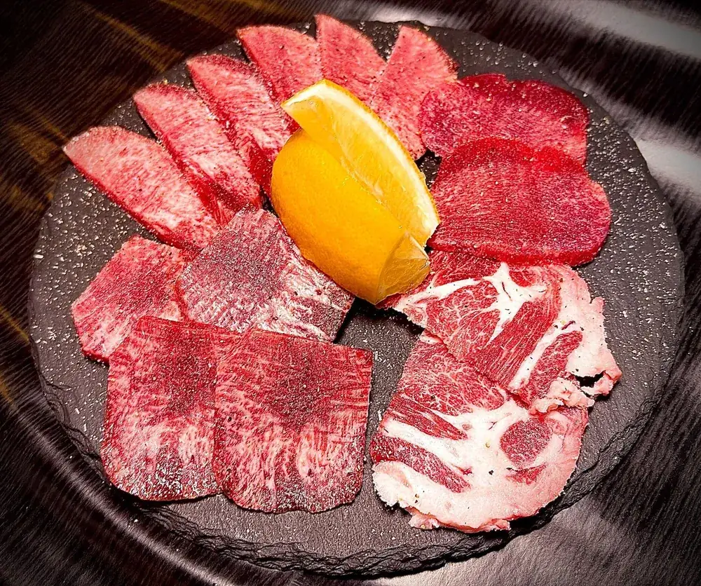
飛驒牛舌各部位的拼盤。也可以選擇厚切牛舌。
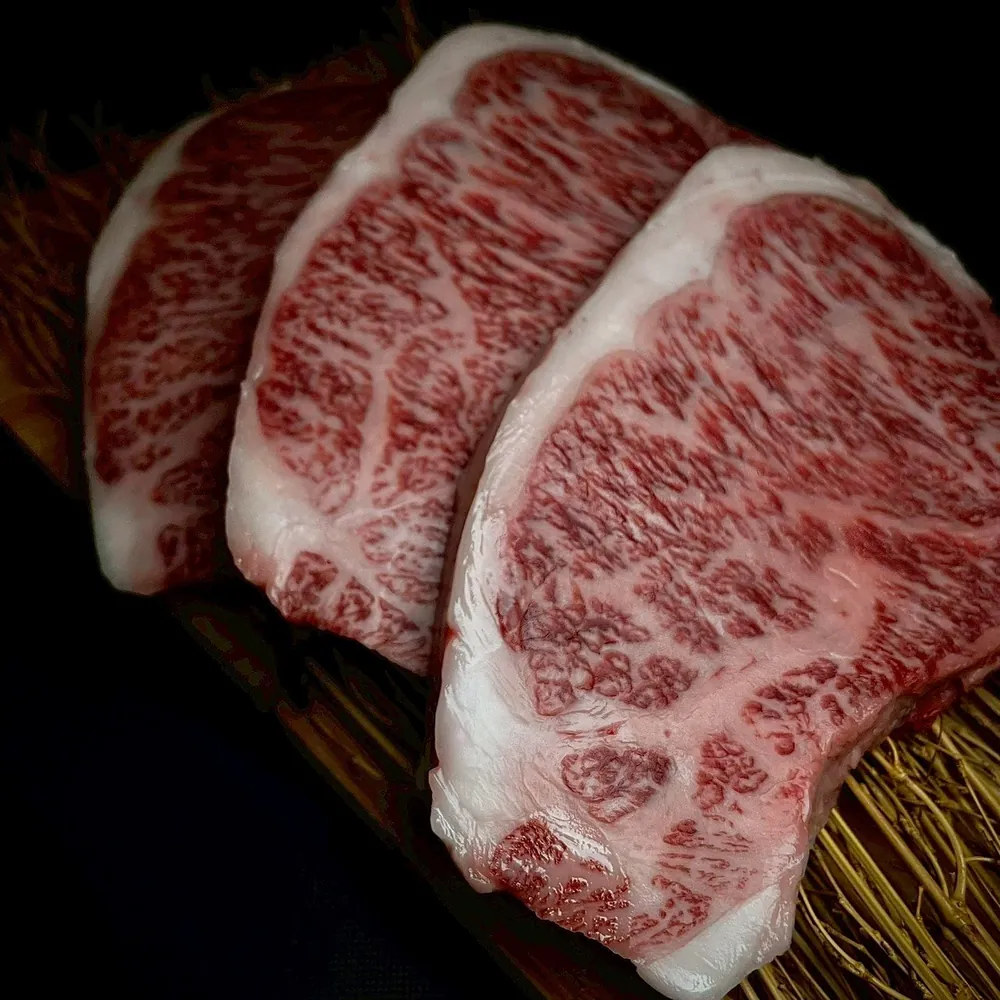
三重縣引以為傲的A5松阪牛，油脂甘甜入口即化。
所有套餐皆附白飯、湯品、泡菜、沙拉與甜點。
牛肉、豬肉、雞肉與海鮮。附照片的完整菜單請見桌上平板。價格均為含稅價。
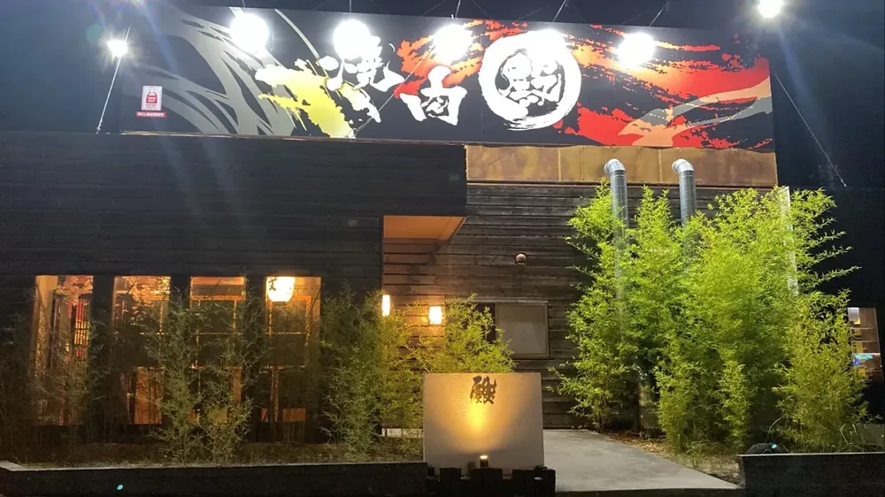
全店60席，全席禁菸。
〒511-1122 三重縣桑名市長島町松ヶ島94